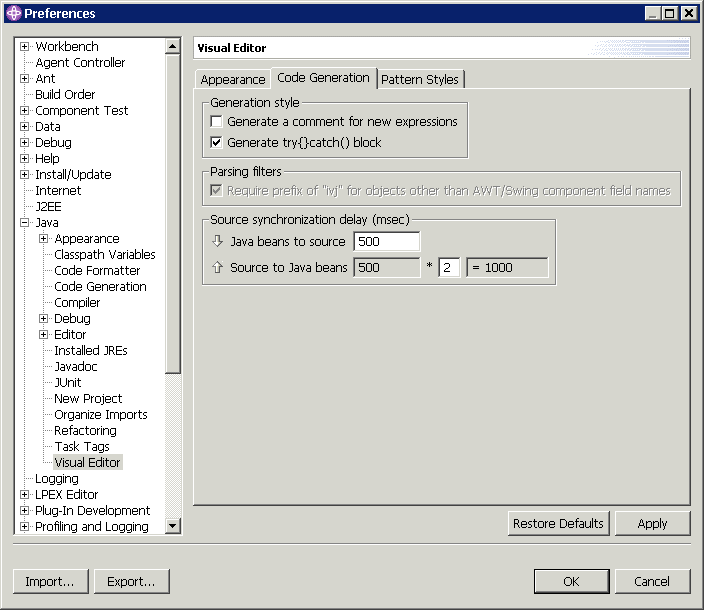

The style of code generated for Java beans is currently based on the style used by the Visual Composition Editor within VisualAge for Java. A default constructor is created that calls the method initialize(), which sets the values of the properties for the class. For applets, the code to set the initial property values is called init().
This is not called by the constructor as it will be executed by the applet browser itself. For any other Java beans that are included in the class, a field is created that is prefixed with ivj. Ivj is only needed in classes not subclassing java.awt.Component. Most visual beans have no special prefix. The ivj and the getmethod lazily initialize the field using its null constructor and sets its properties. Lazy initialization of a field means that the field is only created and initialized if it is null, rather than being initialized within the constructor.
When the Visual Composition Editor generates the get method, it puts the code within a try{}catch{} block that the Visual Editor for Java is able to parse and recognize. However, if it continuously catches every exception thrown during initialization, then the risk of exceptions being suppressed increases. Therefore, it is better to let the exception pass through instead. However, if you wish to have a try{}catch{} block generated, open the Preferences for the Visual Editor for Java and change the value of the check box Generate try{}catch{} block shown below.

To distinguish which methods have been generated by the Visual Editor for Java, select the option Generate a comment for new expressions from the preferences dialog shown above. When the option is 'true', a comment //Generated will be appended to any new statements generated by the Visual Editor for Java.
The following example code is for a newly generated JButton with both options, Generate a comment for new expressions and Generate try{}catch{} block, set to 'true'. The statement for the setText("OK") method that was generated from the Properties view has the comment //Generated appended.
private javax.swing.JButton getJButton1() {
if (ivjJButton1 == null) {
ivjJButton1 = new javax.swing.JButton();
ivjJButton1.setText("OK"); // Generated
} catch (Throwable ivjExc) {
}
return ivjJButton1;
}
Both of these options only apply to new Java beans created using the Visual Editor for Java. When an existing .java source file is opened, the Visual Editor will make changes to the source code only as required to store new property values or relationships between Java beans. Hence, any other code within the file that relies on its internal structure or is not recognized and used by the Visual Editor will be left unchanged.
If you make your own changes to the Java source, they are parsed and analyzed by the Visual Editor to determine whether they affect the Java beans and their property values and relationships. If the newly modified source has changed the Java beans, then the Design view, the Java beans view and the Properties view are refreshed. Although the parsing and analysis of the source code is done on background threads, it may have a performance impact when you make changes to the code in the Source view. As you type in the Source view, the parsing is not performed until you have stopped typing for half a second. Using Window > Preferences > Java > Visual Editor you can increase this delay time by changing the value of Source Synchronization Delay (msec) to a larger value.